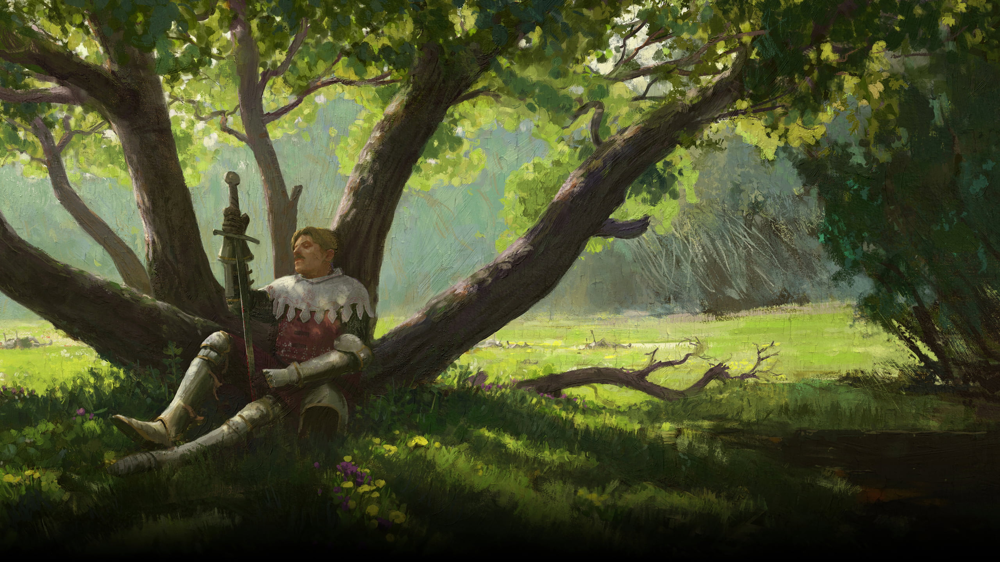

UI/UX DESIGN · FIGMA
Arte na Massa
Protótipo interativo de um site para restaurante, com foco na apresentação visual e na experiência de navegação do usuário.
Explorar projeto ↗
Estudante de Análise e Desenvolvimento de Sistemas, interessado em programação, desenvolvimento de software e criação de soluções que façam sentido.
Sou estudante de Análise e Desenvolvimento de Sistemas e tenho interesse em tecnologia, programação e desenvolvimento de software.
Gosto de aprender coisas novas, entender como sistemas funcionam e transformar ideias em projetos. Atualmente, estou construindo minha experiência por meio dos estudos e de projetos acadêmicos e pessoais.
APRENDIZADO · TECNOLOGIA · CRIATIVIDADETecnologias e conhecimentos que venho explorando durante minha formação e meus projetos.
C · Python
HTML · CSS · JavaScript
SQL · SQLite · MySQL
Git · GitHub · VS Code
Alguns projetos que desenvolvi durante minha jornada, explorando design, tecnologia e experiência do usuário.
Protótipo interativo de um site para restaurante, com foco na apresentação visual e na experiência de navegação do usuário.
Explorar projeto ↗
Estudo de caso de um aplicativo de gestão financeira, pensado para facilitar o acompanhamento e a organização das finanças.
Explorar projeto ↗Nem toda jornada acontece diante de uma tela de código. Nos momentos livres, gosto de explorar mundos, histórias e universos diferentes.
Aventuras, escolhas e histórias que dão vida a universos como Kingdom Come: Deliverance e The Witcher.
Descobrir novos lugares, enfrentar desafios e construir histórias em jogos como Red Dead Redemption 2 e Valheim.
Animes, narrativas marcantes e universos fictícios que despertam a imaginação e a curiosidade.
Estou em busca da minha primeira oportunidade na área de tecnologia. Se você deseja trocar experiências, conversar sobre projetos ou compartilhar uma oportunidade, será um prazer entrar em contato.